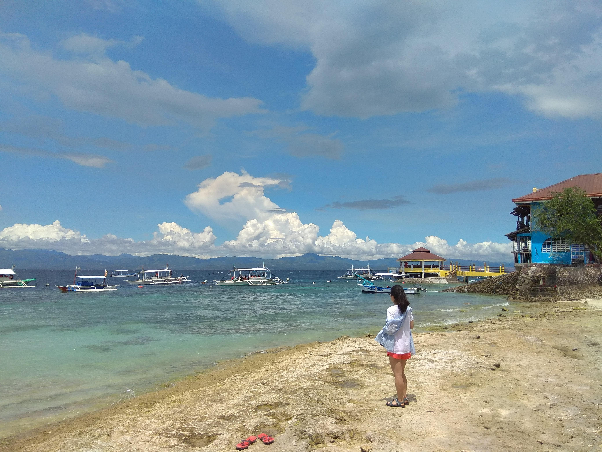

- Bali(발리)
- Osaka(오사카)
- Cebu(세부)
CEBU

세부(타갈로그어: Lungsod ng Cebu, 세부아노어: Dakbayan sa Sugbo, 영어: Cebu City)는 필리핀 중부 세부 주에 있는 도시이다. 세부 주의 주도이며, 비사야 제도의 중심지이다. 수도 마닐라보다 오래된 필리핀 최초의 식민지 도시로, 인구는 2010년을 기준으로 866,171명이며, 주변 지역을 포함하여 대도시권인 메트로 세부를 형성하며, 인구는 250만에 달한다.
국제선, 국내선 등 수많은 항공 노선의 중요한 허브이며, 필리핀 중부 비사야 제도부터 남부의 민다나오에 이르는 지역의 상업, 무역, 산업의 중심지이다. 최근에는 관광 산업과 가구 생산이 번성하고 있으며, 콜센터 운영, 소프트웨어 제작 등 IT 산업의 하청업체로서 급성장하고 있다.